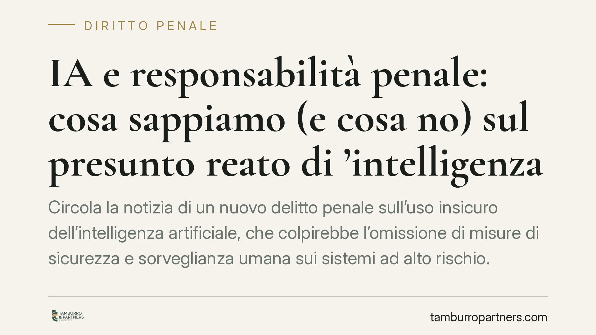

IA e responsabilità penale: cosa sappiamo (e cosa no) sul presunto reato di 'intelligenza artificiale insicura'
Circola la notizia di un nuovo delitto penale sull'uso insicuro dell'intelligenza artificiale, che colpirebbe l'omissione di misure di sicurezza e sorveglianza umana sui sistemi ad alto rischio. La fonte, però, va verificata con cautela. Ricostruiamo cosa è certo, cosa non lo è e quali cautele possono adottare fin da ora le imprese che sviluppano o impiegano sistemi di IA.

Una premessa doverosa sulla fonte
Alcune testate riportano l'introduzione nel codice penale di un nuovo articolo 437-bis, dedicato al reato di "intelligenza artificiale insicura", per effetto di un asserito D.lgs. 160/2026. La notizia punirebbe l'omissione delle misure di sicurezza e della sorveglianza umana sui sistemi di IA ad alto rischio, con estensione della responsabilità amministrativa degli enti ex D.lgs. 231/2001.
Allo stato, questo intervento normativo non risulta verificabile su fonti ufficiali (Gazzetta Ufficiale, Normattiva). Prima di trattarlo come diritto vigente occorre riscontrare esistenza, numerazione e contenuto della norma. Trattiamo quindi la notizia come ipotesi in discussione, non come dato acquisito, e usiamo di conseguenza il condizionale.
Contributo aggiornato al 30 settembre 2026. La materia è in rapida evoluzione: le valutazioni che seguono andranno riverificate alla luce degli sviluppi normativi effettivi.
La novità normativa (in ipotesi)
Se confermata, la norma seguirebbe la logica del reato omissivo di pericolo, collocandosi accanto all'attuale art. 437 c.p. ("Rimozione od omissione dolosa di cautele contro infortuni sul lavoro"). Il parallelismo sarebbe sistematicamente coerente: come l'art. 437 sanziona chi omette cautele antinfortunistiche, il nuovo delitto punirebbe chi non predispone o rimuove le misure di sicurezza e i presidi di controllo umano richiesti per i sistemi di IA più rischiosi.
Questo impianto presuppone un obbligo giuridico di attivarsi. La sua fonte naturale è il Regolamento (UE) 2024/1689 (AI Act), che all'art. 14 impone la sorveglianza umana (*human oversight*) sui sistemi ad alto rischio: i sistemi devono essere progettati per essere effettivamente supervisionati da persone in grado di comprenderne i limiti e, se necessario, intervenire o interromperne il funzionamento. Questo riferimento è verificabile ed è il perno su cui poggerebbe l'eventuale nuova fattispecie penale.
Il meccanismo 231 per le imprese
Se il reato entrasse nel catalogo dei reati-presupposto del D.lgs. 231/2001, l'ente risponderebbe quando l'illecito sia commesso nel suo interesse o a suo vantaggio da soggetti apicali o sottoposti. Non si tratterebbe di una responsabilità automatica: l'ente potrebbe andare esente provando di aver adottato ed efficacemente attuato un modello di organizzazione e gestione idoneo a prevenire reati di quella specie, oltre alla vigilanza di un organismo dedicato.
È un profilo su cui conviene riflettere fin d'ora, a prescindere dalla sorte del singolo decreto: gli obblighi dell'AI Act sono già una realtà e alimenteranno comunque standard di diligenza rilevanti anche in sede penale e civile.
Implicazioni pratiche
Il destinatario tipico è l'impresa che sviluppa, integra o utilizza sistemi di IA ad alto rischio: manager, progettisti e direttori tecnici. Il punto delicato è la sorveglianza umana "reale, non nominale". Non basta indicare formalmente un responsabile del controllo: occorre che questi disponga di competenze, poteri di intervento e strumenti per bloccare il sistema quando serve. Un presidio solo cartaceo, in caso di contestazione, difficilmente reggerebbe.
Sul piano probatorio, la differenza la fa la tracciabilità: log, registri delle decisioni, documentazione delle valutazioni di rischio. È ciò che consente di dimostrare che le cautele erano non solo previste, ma effettivamente operative.
Cosa fare in concreto
- Mappare i sistemi di IA in uso o in sviluppo e verificare quali rientrino nella categoria "alto rischio" ai sensi dell'AI Act.
- Verificare l'effettività della sorveglianza umana: chi controlla, con quali competenze e con quale potere concreto di intervento o di arresto del sistema.
- Documentare le misure di sicurezza adottate, le valutazioni di rischio e le decisioni rilevanti, conservando log e registri consultabili.
- Aggiornare il modello 231 e il risk assessment tenendo conto degli obblighi dell'AI Act, senza attendere la conferma di nuove fattispecie penali.
- Monitorare le fonti ufficiali (Gazzetta Ufficiale, Normattiva) per accertare l'effettiva introduzione e il contenuto della norma prima di assumere iniziative fondate su di essa.
In sintesi
La notizia tocca un tema centrale, ma il suo fondamento normativo va confermato. Ciò che è già certo è l'obbligo di sorveglianza umana sui sistemi ad alto rischio previsto dall'AI Act: costruire presidi solidi ed effettivi è utile a prescindere dall'esito del dibattito sul nuovo reato.
Contributo informativo a cura di Tamburro & Partners Avvocati - Avv. Giuseppe Tamburro. Non costituisce parere legale.
Ogni condominio ha una storia a sé.
Se gestisci un'amministrazione e vuoi un confronto su una specifica questione condominiale, scrivi allo studio. Ti rispondiamo entro un giorno lavorativo.